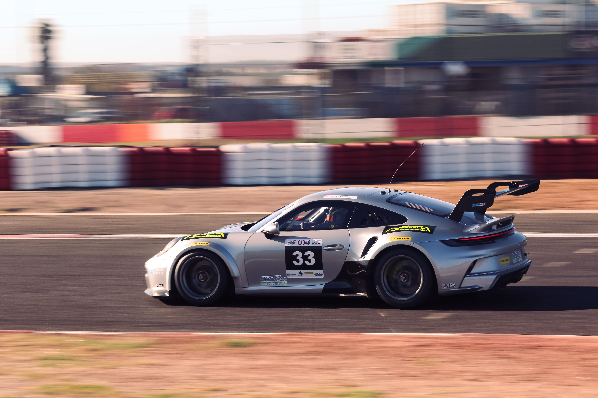
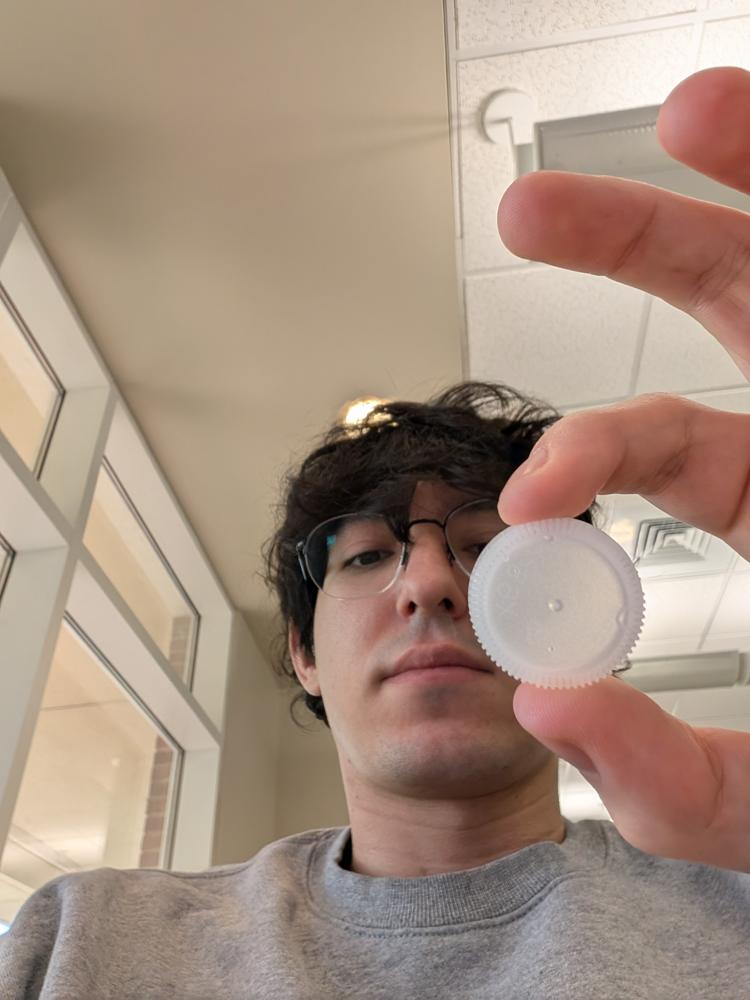
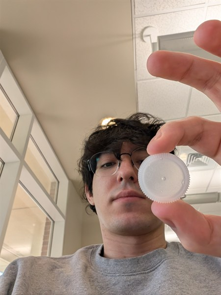
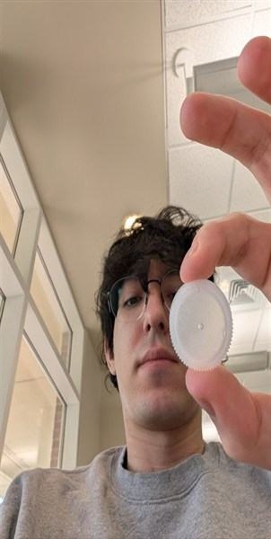
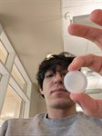

Original Image
Original Image (JPG) | Original Image as a GIF | Original Image in Greyscale | Original Image in Black and White
This page demonstrates the correct ways to handle images on a website, and how not to do it. Using two photos, one from Pexels.com and one I took myself, it compares image formats (JPG, GIF, greyscale, and black and white), resizing an image with CSS versus resizing it in an image editor, what happens when an image is stretched out of proportion, and why enlarging a small image with CSS makes it look blurry.
I picked this photo because it fits the exotic car theme of my site. It was taken by Joshua Cilliers, a Cape Town automotive photographer who specializes in motorsport and shoots cars, races, car builds. The photo shows a silver Porsche 911 GT3 Cup race car. It was shot on a Canon EOS 600D. The original is a JPG that is 5184 x 3456 pixels and 1.20 MB.
Original Image (JPG) | Original Image as a GIF | Original Image in Greyscale | Original Image in Black and White

I took this photo myself. The bottle cap is a near perfect circle. I took it on october 10th at Atkins Library.
Original Image (JPG) |
Original Image as a GIF |
Original Image in Greyscale |
Original Image in Black and White
   Original Image
Downsizing Images with CSS
Proper Reduction of Image with Editor
Improper Image Proportions with CSS
Improper Enlarging with CSS